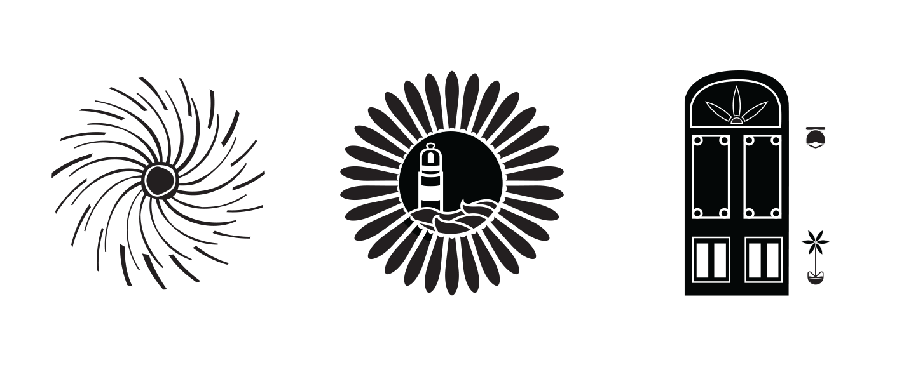

Tangier, Morocco
Description of the Project
The Objective of this project was to select an international tourist city and create a logo represening them. Tangier, Morocco is a port city that became a tourist destination because of their vibrant streets.
Design decisions included: design process
Client: Student Project
Service: Logo
Tools: Illustrator
LOGO VERSIONS
